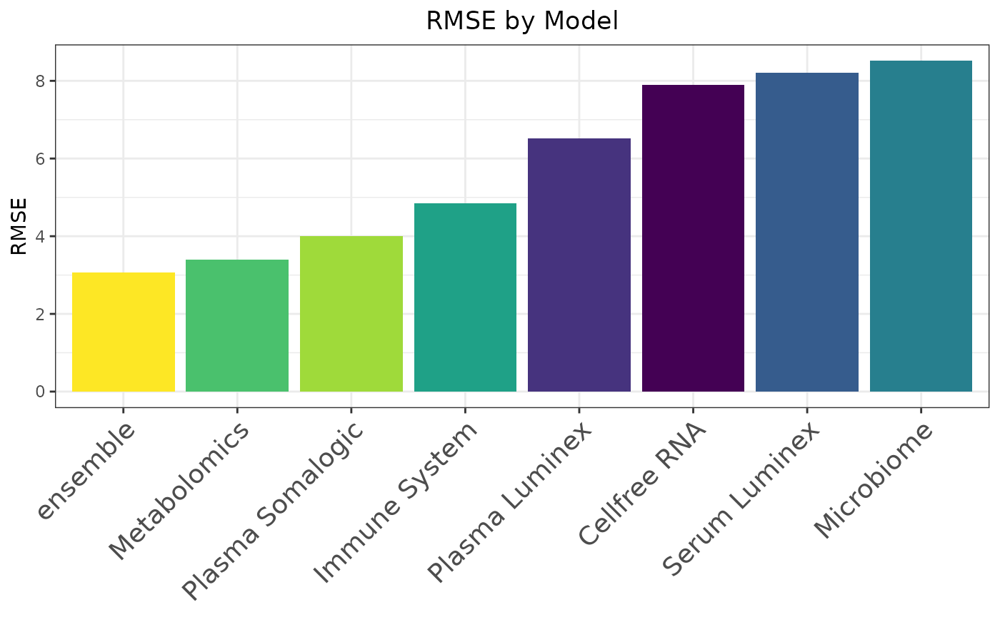
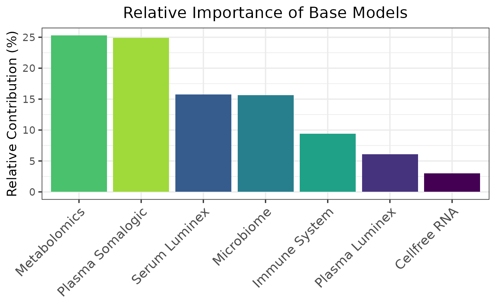
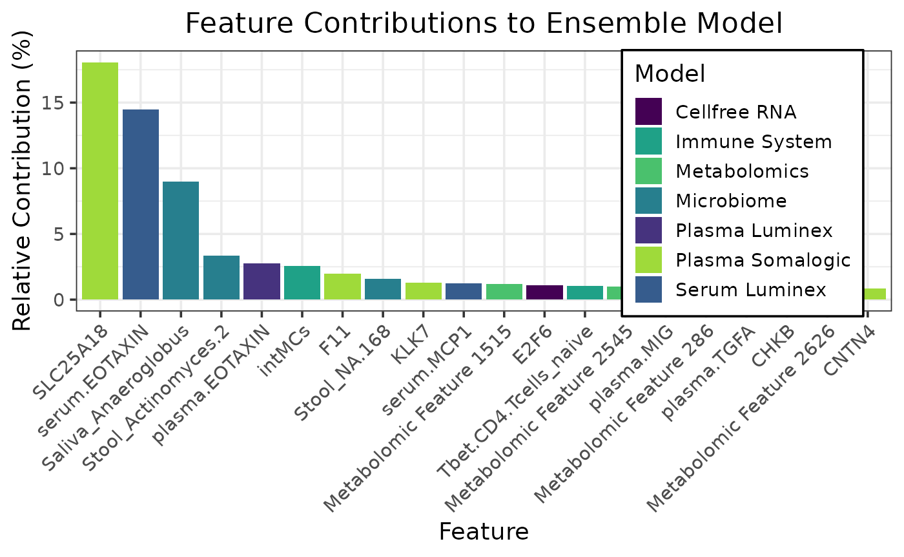
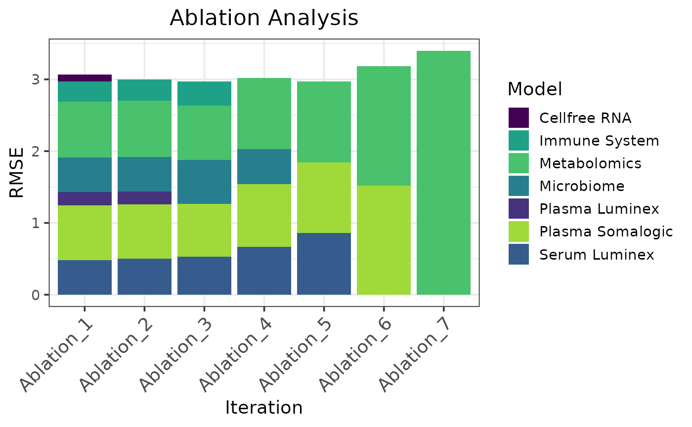
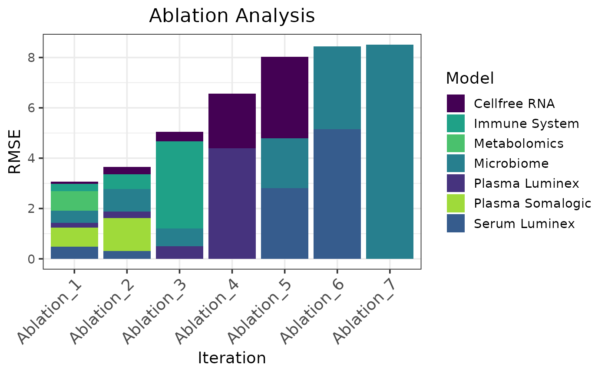

This example shows a regression workflow for predicting gestational age from multimodal pregnancy data using caretMultimodal. The workflow covers downloading and preprocessing seven paired omics assays, training modality-specific elastic net models and a stacked ensemble under leave-one-subject-out cross-validation, and evaluating performance with Spearman correlation, contribution plots, and ablation analysis.
Load and preprocess the data
# Download the data
url <- "https://nalab.stanford.edu/wp-content/uploads/termpregnancymultiomics.zip"
buf <- curl::curl_fetch_memory(url)$content
load(archive::archive_read(rawConnection(buf), file = "termpregnancymultiomics/Data.Rda"))
# Name the input data
names(InputData) <- c("Cellfree RNA", "Plasma Luminex", "Serum Luminex", "Microbiome", "Immune System", "Metabolomics", "Plasma Somalogic")
# Correct nonstandard feature names
InputData <- lapply(InputData, function(df) {
df <- as.data.frame(df)
names(df) <- make.names(iconv(names(df), from = "latin1", to = "UTF-8", sub = ""), unique = TRUE)
df
})
names(InputData$Metabolomics) <- paste("Metabolomic Feature", seq_along(names(InputData$Metabolomics)))
# Remove postpartum samples
postpartum_indices <- which(featureweeks < 0)
InputData <- lapply(InputData, function(x) x[-postpartum_indices, ])
featurepatients <- featurepatients[-postpartum_indices]
featureweeks <- featureweeks[-postpartum_indices]Train models with caretMultimodal
set.seed(42L)
# Define hyperparameter tuning grid
alphas <- seq(0, 1, 0.1)
lambdas <- seq(0, 12, by = 0.5)
tuneGrid <- expand.grid(alpha = alphas, lambda = lambdas)
# Set up leave-one-subject out cross validation
loso_folds <- lapply(unique(featurepatients), function(p) {
which(featurepatients != p) # indices of all samples NOT in this patient
})
trControl <- caret::trainControl(
method = "cv",
index = loso_folds,
savePredictions = "final",
summaryFunction = caret::defaultSummary
)
# Train the base models
pregnancy_models <- caretMultimodal::caret_list(
data_list = InputData,
target = featureweeks,
method = "glmnet",
tuneGrid = tuneGrid,
trControl = trControl,
trim = FALSE
)
# Train the ensemble model
pregnancy_stack <- caretMultimodal::caret_stack(
pregnancy_models,
method = "glmnet",
tuneGrid = tuneGrid,
trControl = trControl
)Evaluate and Interpret
Model performance
summary(pregnancy_stack)## model method alpha lambda RMSE Rsquared MAE RMSESD
## <char> <char> <num> <num> <num> <num> <num> <num>
## 1: Cellfree RNA glmnet 0.5 4.5 7.514323 0.6728265 6.094657 2.316190
## 2: Plasma Luminex glmnet 0.7 1.0 6.264192 0.7268943 5.029513 1.921326
## 3: Serum Luminex glmnet 1.0 2.0 7.988148 0.6981922 6.677682 1.668235
## 4: Microbiome glmnet 0.2 11.5 8.130642 0.4181656 6.648128 1.991066
## 5: Immune System glmnet 0.1 1.5 4.559213 0.9013736 3.970832 1.973698
## 6: Metabolomics glmnet 0.1 0.5 2.965703 0.9640824 2.513691 1.675753
## 7: Plasma Somalogic glmnet 1.0 1.0 3.444065 0.8865887 2.659584 2.118518
## 8: ensemble glmnet 0.0 0.5 2.758618 0.9772290 2.305836 1.388231
## RsquaredSD MAESD
## <num> <num>
## 1: 0.28378405 1.820931
## 2: 0.30932681 1.738192
## 3: 0.27331008 1.482994
## 4: 0.31921014 1.713364
## 5: 0.23586666 1.745224
## 6: 0.04075627 1.390273
## 7: 0.24339738 1.232796
## 8: 0.02707345 1.176519Note: Performance metrics returned by
summary.caret_stack() are the resampling summaries
generated by caret and may differ from metrics calculated
from pooled out-of-fold predictions. See
compute_metric.caret_stack() for calculating metrics
directly from pooled out-of-fold predictions.
metric_fun <- function(preds, target) {
sqrt(mean((preds - target)^2))
}
caretMultimodal::compute_metric(
pregnancy_stack,
metric_fun = metric_fun,
metric_name = "RMSE"
)## Model RMSE
## <char> <num>
## 1: ensemble 3.065251
## 2: Metabolomics 3.397811
## 3: Plasma Somalogic 4.001478
## 4: Immune System 4.856087
## 5: Plasma Luminex 6.516770
## 6: Cellfree RNA 7.891113
## 7: Serum Luminex 8.210961
## 8: Microbiome 8.512699
caretMultimodal::plot_metric(
pregnancy_stack,
metric_fun = metric_fun,
metric_name = "RMSE"
)
Base model and feature contributions
caretMultimodal::compute_model_contributions(pregnancy_stack)## Model Relative Contribution
## <char> <num>
## 1: Metabolomics 25.285246
## 2: Plasma Somalogic 24.874757
## 3: Serum Luminex 15.742591
## 4: Microbiome 15.616400
## 5: Immune System 9.385203
## 6: Plasma Luminex 6.109482
## 7: Cellfree RNA 2.986322
caretMultimodal::plot_model_contributions(pregnancy_stack)
caretMultimodal::compute_feature_contributions(pregnancy_stack)## Model Feature Relative Contribution
## <char> <char> <num>
## 1: Plasma Somalogic SLC25A18 18.0723947
## 2: Serum Luminex serum.EOTAXIN 14.4946102
## 3: Microbiome Saliva_Anaeroglobus 9.0073678
## 4: Microbiome Stool_Actinomyces.2 3.3268629
## 5: Plasma Luminex plasma.EOTAXIN 2.7806292
## 6: Immune System intMCs 2.5522895
## 7: Plasma Somalogic F11 1.9678954
## 8: Microbiome Stool_NA.168 1.5943148
## 9: Plasma Somalogic KLK7 1.2901194
## 10: Serum Luminex serum.MCP1 1.2479806
## 11: Metabolomics Metabolomic Feature 1515 1.1777251
## 12: Cellfree RNA E2F6 1.0780740
## 13: Immune System Tbet.CD4.Tcells_naive 1.0451590
## 14: Metabolomics Metabolomic Feature 2545 0.9796715
## 15: Plasma Luminex plasma.MIG 0.9552108
## 16: Metabolomics Metabolomic Feature 286 0.9410198
## 17: Plasma Luminex plasma.TGFA 0.9403460
## 18: Plasma Somalogic CHKB 0.9087291
## 19: Metabolomics Metabolomic Feature 2626 0.8667525
## 20: Plasma Somalogic CNTN4 0.8663147
## Model Feature Relative Contribution
## <char> <char> <num>
caretMultimodal::plot_feature_contributions(pregnancy_stack)
Ablation analysis
# Forward ablation
caretMultimodal::compute_ablation(
pregnancy_stack,
metric_fun = metric_fun,
metric_name = "RMSE"
)## Row Ablation_1 Ablation_2 Ablation_3 Ablation_4 Ablation_5
## <char> <num> <num> <num> <num> <num>
## 1: Cellfree RNA 2.986322 NA NA NA NA
## 2: Plasma Luminex 6.109482 6.001124 NA NA NA
## 3: Serum Luminex 15.742591 16.698123 17.887264 22.000382 28.973279
## 4: Microbiome 15.616400 16.130522 20.676324 16.183171 NA
## 5: Immune System 9.385203 9.842819 11.468707 NA NA
## 6: Metabolomics 25.285246 26.126223 25.407053 32.831343 37.965888
## 7: Plasma Somalogic 24.874757 25.201190 24.560652 28.985104 33.060834
## 8: RMSE 3.065251 2.996606 2.974001 3.017194 2.973132
## Ablation_6 Ablation_7
## <num> <num>
## 1: NA NA
## 2: NA NA
## 3: NA NA
## 4: NA NA
## 5: NA NA
## 6: 52.323708 100.000000
## 7: 47.676292 NA
## 8: 3.184959 3.397811
caretMultimodal::plot_ablation(
pregnancy_stack,
metric_fun = metric_fun,
metric_name = "RMSE"
)
# Reverse ablation
caretMultimodal::compute_ablation(
pregnancy_stack,
metric_fun = metric_fun,
metric_name = "RMSE",
reverse = TRUE
)## Row Ablation_1 Ablation_2 Ablation_3 Ablation_4 Ablation_5
## <char> <num> <num> <num> <num> <num>
## 1: Cellfree RNA 2.986322 8.181560 7.695312 33.165760 40.263147
## 2: Plasma Luminex 6.109482 7.077252 10.012191 66.834240 NA
## 3: Serum Luminex 15.742591 8.352738 0.000000 0.000000 35.039780
## 4: Microbiome 15.616400 24.712844 14.023535 0.000000 24.697073
## 5: Immune System 9.385203 15.843630 68.268962 NA NA
## 6: Metabolomics 25.285246 NA NA NA NA
## 7: Plasma Somalogic 24.874757 35.831976 NA NA NA
## 8: RMSE 3.065251 3.658108 5.053631 6.563378 8.024488
## Ablation_6 Ablation_7
## <num> <num>
## 1: NA NA
## 2: NA NA
## 3: 60.882182 NA
## 4: 39.117818 100.000000
## 5: NA NA
## 6: NA NA
## 7: NA NA
## 8: 8.448777 8.512699
caretMultimodal::plot_ablation(
pregnancy_stack,
metric_fun = metric_fun,
metric_name = "RMSE",
reverse = TRUE
)